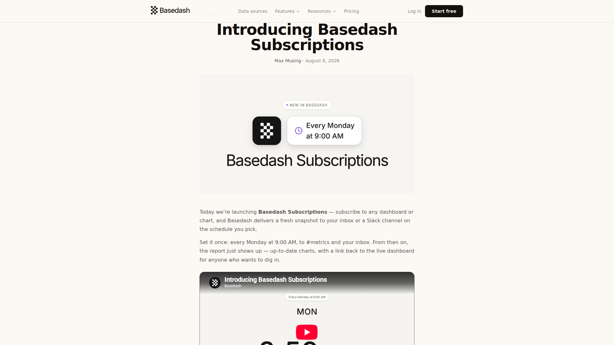

Quick overview
Basedash Subscriptions is a recent Product Hunt launch listed in the 未分类 category. The public feed describes it this way:
> Subscribe to any dashboard. Delivered on schedule.
That short description is a useful starting point, but it is not a substitute for the product's own documentation. This article intentionally avoids inventing features, prices, reviews, performance claims, or first-hand experience.
Why it may be worth a closer look
New tools are most useful when they remove repetitive work, make a complicated workflow easier to understand, or help a small team keep information in one place. Based on the feed entry alone, Basedash Subscriptions is best treated as a candidate for further research rather than a guaranteed solution. Start by comparing the problem it claims to address with the way you work today. A short demo, a changelog, and the help center often reveal more than a launch headline.
Who may find it useful
- People exploring productivity or development tools and willing to test them in a limited, low-risk setting;
- Buyers with a clearly defined task who want to compare several approaches before committing;
- Team leads who need to review permissions, collaboration features, export options, and data handling.
If your current workflow is stable and no clear pain point exists, bookmarking the launch and watching future updates may be the most sensible next step. Fit depends on context, budget, learning time, and whether your data can be exported when needed.
Checks before subscribing
Use Learn more to open the latest product page. Confirm the current free allowance, subscription price, cancellation process, storage location, privacy policy, support channel, and any limits on integrations. If the tool requests access to email, cloud storage, source code, or team documents, begin with non-sensitive test data and verify that permissions can be revoked. For business use, ask the relevant owner to review security and compliance boundaries.
Overall, Basedash Subscriptions is an interesting candidate to monitor, but the available feed information is not enough for a strong recommendation. Verify current details on the official site and decide from a real, appropriately scoped trial.